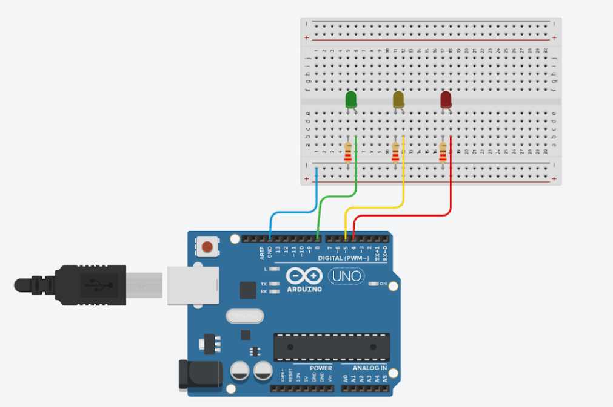

Guía de trabajo
Asignatura: Tecnología / Programación y Electrónica
Grado: 5° año
Práctica: Simulación de Semáforo con Arduino
Duración estimada: 2 sesiones de 50 minutos
Practicario
Primero completa tus respuestas en esta hoja. Cuando termines, usa el botón para abrir la versión de impresión y guardar un PDF con tus propias respuestas.
1. Propósito de la práctica
Que el estudiante:
- Comprenda el funcionamiento de un sistema secuencial.
- Identifique la función de pines digitales en Arduino.
- Programe tiempos de espera con
delay(). - Analice la lógica de un semáforo real.
- Desarrolle pensamiento algorítmico aplicado a la vida cotidiana.
2. Materiales
- 1 Arduino UNO.
- 1 Protoboard.
- 3 LEDs (rojo, amarillo, verde).
- 3 resistencias de 220Ω.
- Cables jumper.
- Cable USB.
- Computadora con Arduino IDE.
3. Conexiones
- LED Verde -> Pin 8.
- LED Amarillo -> Pin 5.
- LED Rojo -> Pin 4.
Cada LED debe tener resistencia en serie hacia GND.
Imagen de referencia

Instrucción para ingresar a Tinkercad
- Abre tu navegador de internet (Chrome, Edge o Firefox).
- Ingresa a la siguiente dirección:
https://www.tinkercad.com. - Haz clic en Iniciar sesión (Sign in).
- Selecciona una de estas opciones para entrar: Cuenta de Google, Cuenta de Microsoft o Cuenta de Autodesk.
- Una vez dentro de la plataforma, entra a la sección Circuits (Circuitos).
- Presiona el botón Create new Circuit (Crear nuevo circuito).
- Dentro del simulador podrás agregar un Arduino Uno, insertar LEDs, colocar resistencias, conectar buzzer y escribir el código del programa.
- Finalmente presiona Start Simulation para ejecutar el circuito y verificar que funcione correctamente.
Indicaciones importantes:
- Guarda tu proyecto con el nombre:
HimnoAlegria_Arduino_TuNombre. - Verifica que los LEDs enciendan en la secuencia correcta del semáforo.
- Comprueba que el circuito no tenga errores de conexión.
4. Código base
int rojo=4;
int amarillo=5;
int verde=8;
void setup(){
pinMode(verde,OUTPUT);
pinMode(amarillo,OUTPUT);
pinMode(rojo,OUTPUT);
}
void loop(){
digitalWrite(verde,HIGH);
delay(20000);
digitalWrite(verde,LOW);
delay(300);
digitalWrite(amarillo,HIGH);
delay(3000);
digitalWrite(amarillo,LOW);
delay(300);
digitalWrite(rojo,HIGH);
delay(15000);
digitalWrite(rojo,LOW);
delay(300);
}5. Explicación técnica
pinMode()configura el pin como salida.digitalWrite(HIGH)enciende el LED.delay()pausa el programa en milisegundos.- El sistema funciona de forma secuencial, no paralela.
- El ciclo se repite indefinidamente gracias a
loop().
6. Actividades de análisis
- ¿Cuántos segundos dura encendido cada color?
- ¿Qué pasaría si quitamos los
delay(300)? - ¿Cómo modificarías el código para que el amarillo parpadee?
- ¿Este sistema es eficiente en la vida real? ¿Por qué?
7. Rúbrica de evaluación
| Criterio | Excelente | Bueno | Suficiente | Insuficiente |
|---|---|---|---|---|
| Conexión correcta | Funciona al primer intento | Ajustes mínimos | Necesitó ayuda | No funciona |
| Comprensión del código | Explica cada parte | Explica parcialmente | Lee sin entender | No comprende |
| Funcionamiento | Secuencia perfecta | Error menor | Desfase de tiempos | No ejecuta |
| Reflexión técnica | Análisis profundo | Reflexión básica | Respuestas simples | Sin análisis |
Respuestas del practicario
Firma de revisión
Profesor: ____________________________________